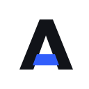
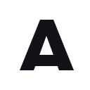

ApertureA tapered sighting aperture with one active shelf. The strongest candidate for further identity exploration.Light SVG · Dark SVG · Mono SVG
FolioOffset records and a selected line. An editorial collection mark, not a replacement search icon.Light SVG · Dark SVG · Mono SVG
RelayTwo contexts joined by one deliberate bridge. A feature metaphor, not live connection status.Light SVG · Dark SVG · Mono SVG